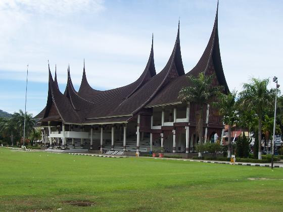

West Sumatra
Padang
The capital of West Sumatra, Padang is the gateway to the Minang highlands. With the largest port on Sumatra’s West Coast, this is a merchant town attracting ships trading in goods such as rubber, cinnamon, coffee, tea, cement and coal. If you take a stroll down to the old colonial waterfront you’ll see century old warehouses stocked with fragrant cinammon and other spices waiting to be shipped to Jakarta and Singapore. The Batang Arau River flows through the city and it is quite a sight to see the collection of small boats and hand paddled ferries that line the riverside. Or you can do some diving activities in Padang
Bukit Tinggi
Nestled in the highlands north of Padang in the Agam valley, the town of Bukittinggi or ‘high hill’ is West Sumatra’s cultural center. While Padang may be the modern commercial and administrative hub, Bukittinggi is a bustling market town. Although it is less than a degree south of the equator, Bukittinggi has a refreshingly cool climate due to its elevation – over 900 meters above sea level. While it rains here often, this is not enough to deter travelers who come to enjoy what many claim is the most hospitable city in Sumatra. The town also has an alternative name, Tri Arga, which refers to the three majestic mountains that shape the regions fortunes. Many visitors come to Bukittinggi to visit the remarkable Ngarai Sianok Canyon where giant rock cliff faces, rugged trees which grow on top and the dramatic surrounding mountains make this canyon a spellbinding view. This is an ideal place to go if you want to get beyond the average tourist trail. Compared to other spots in Sumatra, Bukkitinggi only receives a handful of visitors that use the town as a base for nearby hikes or to take cultural tours to the Minangkabau highland.
.jpg)
Lake Maninjau
The splendid Lake Maninjau in West Sumatra, is one of the calmest places in Indonesia. Come to this ancient lake, set within a volcanic crater, to escape from the crowds and hustle and bustle of the rest of the country. Perched in the mountain highlands, around 461 meters above sea level, Lake Maninjau is a splendid sight. At 100 m2, this lake is an impressive natural wonder and a place to come when you’re after a peaceful and relaxing place to unwind and absorb a sleepy pace of life. The lake is more than just a beautiful landmark though, it’s also a part of the cultural heritage of the local people. The legend of "Bujang Sembilan" (roughly translates as "Nine Young Men") is based around this lake. According to local folklore, one of the men in the story died by plunging himself into the crater. The crater then expanded, forming a lake. With inspiring scenery and peaceful surrounds, a visit to Lake Maninjau will leave you relaxed and rejuvenated. If you’re looking for fantastic views, the Maninjau resort is perched at the top of a hill and offers some of the best views of the lake. Maninjau Village is located near the lake and a number of famous Indonesians call this place home. Buya HAMKA, one of the most notable novelists in Indonesia, was born here. HAMKA wrote the phenomenal Tenggelamnya Kapal Van der Wijk. Another famous person who was born here is Rangkayo Rasuna Said, one of Indonesia's national heroes. Her name has been immortalized as one of the protocol roads in Jakarta.
Mentawai Island
Take a trip into the wild with an adventure to the Mentawai islands. Be surrounded by tropical rainforests and immerse yourself in the traditions of the local people. While the physical distance between the mainland and Mentawai is not great, this remains one of the most isolated places in Indonesia, and was only subject to outside influences at the start of the 20th century. A long way from the world of shopping malls and theme parks, this is where travellers come to get a truly off the beaten track adventure. Located off the West coast of Sumatra, the Mentawai archipelago includes four municipalities, Siberut, Sipora, North Pagai and South Pagai. is the biggest of the Siberut islands and remains largely covered with tropical rainforest. From the moment you arrive on and see the white coral beaches, ancient rainforests and hear the cheeky black gibbons playing in the trees you’ll find it hard to resist falling in love with the place. This Siberut island is home to a rich array of bio-diversity which has earned it designation as a UNESCO biosphere reserve. The remote location of these islands means that the Mentawai people have had very little contact with the outside world. The archipelogo is thought to have broken off from the rest of Sumara about 500,000 years ago and it is only since the 20th century that outside influences began to have an impact on the local people. Today, the Mentawai still abide by traditional practices and live largely off the land. Local people have a strong spiritual relationship with the forest with a belief system that emphasizes harmony with creation. It is believed people first came to inhabit these islands at least several thousand years ago. Most anthropologists classify the Mentawai people as Protomalay which means they have a mostly Neotlithic culture but have not been effected by Buddhism, Islam or Hinduism. Tatoos are an important symbol in Mentawai culture and reflect maturity, manhood and status. The art of this body painting has been inherited from ancient ancestors and the ink is made from natural fibres. The biggest town on Siberut is Muara Siberut on the southeast coast. This is the major point of entry for tour groups from the mainland. From here, you can travel with a with a local guide and trek inland to some of the Mentawai villages. If your bahasa is good enough, chat to the locals and enjoy their hospitality. The other big attraction for visitors to these islands is the world class surfing. With some of the best surfing conditions in the world, monster waves and swells that remain all year round, this is ranked by serious surfers as a must visit destination.